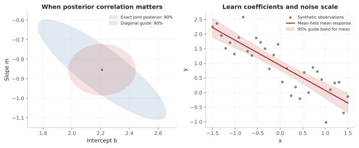

An inference engine you can inspect
Two vectors.
A useful approximation.
Learn a mean and a standard deviation for every latent. The native engine uses PyTorch autograd and Adam; it does not import Pyro or optimize covariance parameters.
The complete fit
Use the same model and select guide="diagonal". This example learns an intercept, a slope and the observation noise. Positive noise has a Normal guide on the log scale, so its guide on the original scale is lognormal.
Smallprob
Native PyTorch · diagonal guide
import numpy as np
from smallprob import model, Normal, HalfNormal
@model
def regression(x):
b = Normal(0, 5)
m = Normal(0, 5)
sigma = HalfNormal(1)
y = Normal(b + m * x, sigma)
x = np.linspace(-1.5, 1.5, 32)
line = regression(x)
data = line.simulate(seed=7, fixed={"b": 1.2, "m": -0.7, "sigma": 0.6})
posterior = line.infer(y=data["y"][0], method="vi", guide="diagonal", steps=4000, seed=7)
print(posterior.mean("m"), posterior.interval("m"))
print("Noise scale:", posterior.mean("sigma"))
draws = posterior.sample(2000, seed=8)
Pyro
SVI · AutoDiagonalNormal
import torch
import pyro
import pyro.distributions as dist
from pyro.infer import SVI, Trace_ELBO, Predictive
from pyro.infer.autoguide import AutoDiagonalNormal
from pyro.optim import ClippedAdam
# Standalone script settings: use double precision for this small example.
torch.set_default_dtype(torch.float64)
torch.set_num_threads(1)
pyro.set_rng_seed(7)
pyro.clear_param_store()
def regression(x, y=None):
b = pyro.sample("b", dist.Normal(0., 5.))
m = pyro.sample("m", dist.Normal(0., 5.))
sigma = pyro.sample("sigma", dist.HalfNormal(1.))
with pyro.plate("observations", len(x)):
return pyro.sample("y", dist.Normal(b + m * x, sigma), obs=y)
x = torch.linspace(-1.5, 1.5, 32)
fixed = {"b": torch.tensor(1.2), "m": torch.tensor(-0.7), "sigma": torch.tensor(0.6)}
y = pyro.poutine.condition(regression, data=fixed)(x)
guide = AutoDiagonalNormal(regression)
steps = 4000
optimizer = ClippedAdam({"lr": .03, "lrd": .1**(1/steps)})
svi = SVI(regression, guide, optimizer, loss=Trace_ELBO(num_particles=32, vectorize_particles=True))
for _ in range(steps):
svi.step(x, y)
draws = Predictive(guide, num_samples=2000)(x, y)
print(draws["m"].mean(), draws["m"].quantile(torch.tensor([.025, .975])))
print("Noise scale:", draws["sigma"].mean())
Both scripts generate synthetic data from the same probability model. NumPy and Torch random streams differ, so the same seed does not give identical observations or fitted summaries. Both guides are diagonal; the optimizers and ELBO estimators differ. The checks below use fixed shared observations and independent references.
What the engine optimizes
u = μ + s ⊙ ε, ε ∼ Normal(0, I)
ELBO = Eq[log p(y, T(u)) + log |JT(u)|] + H[q]
The trainable vectors are μ and log s. Reparameterization lets gradients pass through sampled values; Normal entropy is analytic. For a positive variable, T(u) = exp(u) and the log-Jacobian is u. The model itself can have dependencies and unknown scales; only the guide factors are independent.
Training uses antithetic Monte Carlo pairs, gradient clipping and a decaying learning rate. The returned ELBO is estimated from fresh samples, with its Monte Carlo standard error. It is not exact evidence or proof of convergence. Read the engine.
Check it against answers we know



Six known-noise regression fits cover three seeds and both centered and correlated predictors. The means agree with the analytic Gaussian posterior; the largest scale error against the optimal diagonal guide is 2.0%. The unknown-noise fit is compared with independently refined numerical quadrature: largest mean error 0.017 reference SD, largest SD difference 8.2%.
For a Gaussian posterior with precision Λ, the best mean-field guide has variance 1 / Λᵢᵢ. That generally differs from the marginal variance (Λ⁻¹)ᵢᵢ. The narrower red ellipse is the consequence of excluding correlation, not a claim of more accurate uncertainty.
Measured validation results · Reproduce the checks and figure
Small scope, explicit choices
The native engine supports continuous Normal, HalfNormal and StudentT graphs on available Torch CPU, CUDA or MPS devices. NumPy-facing results remain NumPy arrays. It does not add discrete VI, neural modules inside @model, general minibatching or multimodal guides. Use the separate VAE helper for amortized neural inference.
For compatibility, method="vi" without a guide still selects the existing full-covariance Pyro backend; guide="full" makes that choice explicit. Exact inference remains the default for supported Gaussian models and fixed-parameter HMMs.
uv sync --extra torch --extra viz --locked
.venv/bin/python website/downloads/examples/meanfield-smallprob.py
.venv/bin/python -m examples.meanfieldReadable figures, sharp exports
Enable shared Matplotlib settings explicitly. Notebooks show SVG plus high-resolution PNG; figure exports default to 300 dpi, with readable labels, a consistent color cycle, light grids and open top/right spines. Importing Smallprob does not change your plotting settings.
import matplotlib.pyplot as plt
from smallprob.plotting import use_style, plot_style
use_style() # apply once in a notebook
# Or temporarily, restoring your existing settings afterwards:
with plot_style():
fig, ax = plt.subplots()
ax.plot(x, y)
fig.savefig("fit.svg") # vector
fig.savefig("fit.png") # 300 dpiReference: PyTorch's pathwise derivative estimator. All figures above were produced by the committed Python example; they are not browser simulations.